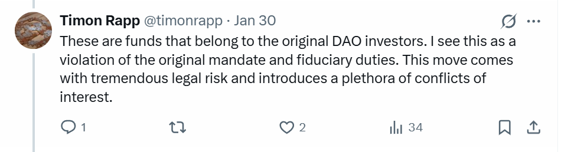
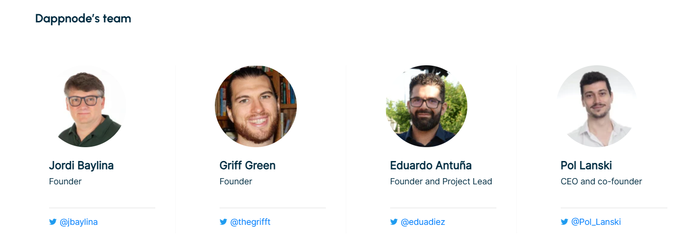
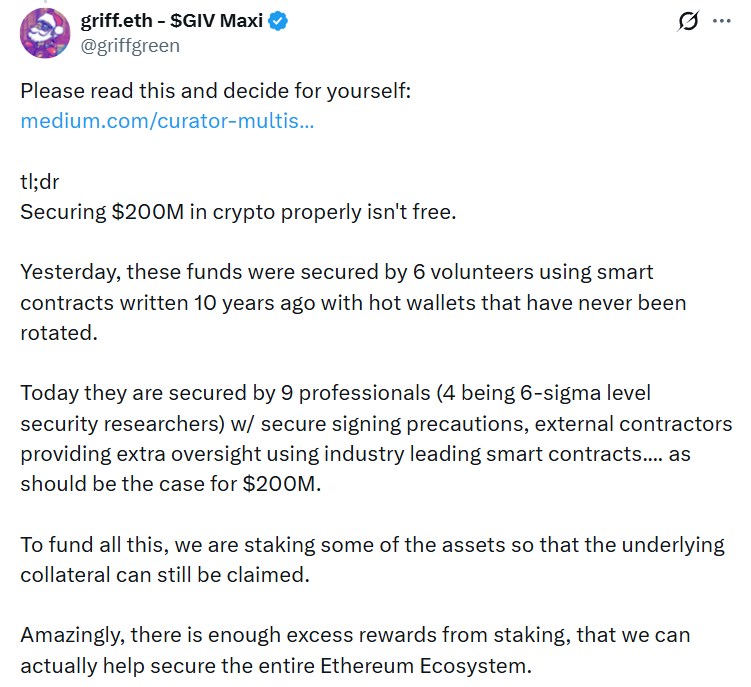

Seven Curators Took Control of $220M in Unclaimed TheDAO Funds, But Do They Have the Right?
On January 29, 2026, Giveth founder Griff Green announced TheDAO Security Fund, which will activate approximately 75,000 ETH ($220 million) that has remained unclaimed since the 2016 TheDAO hack.
Ethereum co-founder Vitalik Buterin joined as one of the 7 curators who will stake these funds and use the generated rewards to fund Ethereum security grants and cover custody operational costs.
In response, Timon Rapp, an original TheDAO curator who joined the multisig in 2016 to help people affected by DAO edge cases recover their funds, publicly resigned on January 30, 2026.
He stated: "These are funds that belong to the original DAO investors. I see this as a violation of the original mandate and fiduciary duties. This move comes with tremendous legal risk and introduces a plethora of conflicts of interest."
{kind=link}
Another original curator, Gian Bochsler, also resigned. In written responses to my questions, Bochsler confirmed he was "not aligning with the repurposing of the funds and the new process."
How did curators vote to use the unclaimed funds?
I asked Timon Rapp about this. In written responses, he told me there was no official voting process. Griff pulled the six curators into a Signal group and presented the plan. Vitalik seemed to be already briefed and on-board.
According to Timon, the initial proposal would have allowed people to claim their funds for one more year after setting up the new DAO. After that year, remaining DAO investors would be disowned and all funds would move to the new DAO.
Initially, Timon was the only one who opposed the plan. After a few weeks Gian Bochsler was advised by his lawyer to not sign anything in the matter under any circumstances. Bochsler later commented this: "I sought legal advice on the matter. Timon and I were in favor of requiring court approval or similar formal process for any repurposing of the funds, because we believe such a decision is not ours to make unilaterally."
According to Timon, Gian shared this advice with Vlad Zamfir and Alexey Akhunov, and for a few days they joined the opposition.
However, Griff later reframed the plan in two significant ways.
First, regarding claim withdrawals: The final proposal changed this to keep withdrawals open indefinitely. However, according to Timon, the new curators can change their mind about this at-will - there is nothing enforcing this long-term. Once the old curators signed the funds over, it's up to the new DAO to keep or break that promise.
Second, the structure was changed to a two-multisig model. Instead of only using the new DAO multisig, a second multisig (3-of-5) was created with certain controls over the funds, such as controlling the spending limit of the staking rewards. This second multisig includes Vlad and Alexey as members. According to Timon, being able to retain some control of the funds via this multisig is what made Alexey and Vlad change their minds.
The final vote looked as follows: "Ultimately Griff, Alexey and Vlad signed the transactions which removed Timon Rapp and Gian Bochsler from the multisig & initiated the funds to move away. Them signing the ethereum transactions was the actual vote."
Also, according to Timon Rapp, Griff Green's plan included making the address-to-curator mapping of new curators not publicly known to provide deniability about who signed transactions.
In Timon's opinion, they are creating deniability to avoid legal exposure.
Marshall Islands
Griff founded "The DAO LLC" in the Marshall Islands.
This may create a barrier for rightful owners of the funds who seek to recover their assets or claim fees generated from staking their funds.
According to Timon, each new curator was asked to sign an indemnification agreement with this LLC.
Gian Bochsler confirmed he was asked to sign the indemnification agreement but declined: "I did not agree with choosing the Marshall Islands jurisdiction, nor with the agreement itself."
If so, wouldn't this create a situation where a rightful owner of the funds sues the LLC, and the funds for the legal defense would be taken from staking rewards generated by their own assets?
When I asked Gian Bochsler where the funding for legal defense would come from, he stated: "The funds will probably have to come from the future ETH produced by the staked funds, but this was still up for debate when I left. The source is the unclaimed ETH for sure."
Are there conflicts of interest?
According to Unchained, the Ethereum Foundation will define eligibility for grant rounds.
However, no formal documentation establishing this arrangement or the legal basis for Ethereum Foundation's authority over funds has been made public. The rightful owners of the funds never consented to Ethereum Foundation controlling access to their funds.
Also, owners' funds will be staked through DappNode, a company founded by three of the seven curators.
Jordi Baylina and Griff Green are currently listed as founders and Pol Lanski serves as CEO and co-founder.
{kind=link}
Will the curators receive direct or indirect financial benefit from staking approximately $200 million using its infrastructure?
When asked "How will DappNode operational costs be paid for?", curator pcaversaccio responded: "via part of the staking rewards."

Curators tainted unclaimed funds with Tornado Cash
On February 2, 2026, one of the curators, pcaversaccio, posted that they had moved 69,420 ETH for staking using an address previously linked to Tornado Cash.
He wrote "That means every future withdrawal and grant tx is now beautifully, irrevocably tainted."

The issue is that stolen funds are regularly laundered through Tornado Cash. According to Merkle Science (chain analysis company): "The use of a mixer—while sometimes lawful—will still serve as one risk indicator among many in determining whether a transaction or address is categorized as low, medium, or high risk."
This means that addresses interacting with these funds can now be flagged as suspicious by both authorities and various security systems. The US Treasury Department's Office of Foreign Assets Control (OFAC) called Tornado Cash "a significant threat to the national security."
Now every rightful owner who requests their funds may face the problem that their withdrawal will have a chain of custody linked to Tornado Cash-associated addresses. Chain analysis systems and exchanges may flag these addresses as suspicious, creating a risk of account blocking or investigation.
What will happen to rightful owners and grant recipients from this fund if the government decides to sanction Tornado Cash again?
Treasury provided no guarantees that it won't return Tornado Cash to the sanctions list in the future. In its delisting statement, Treasury stated that it "exercised our discretion."
This means the decision was discretionary, not forced by court, and can be reconsidered at any time.
pcaversaccio wrote that he tainted the rightful owners' funds intentionally to "make fun of the term 'tainted'" and to make a statement that this is not bad money.

Doesn't this create unnecessary compliance risks for owners of the funds?
Doesn't this create one more barrier for them to request the return of their funds?
Do the multisig signers have the right to decide how to use these assets?
When I asked this question, Griff Green responded: "Securing $200M in crypto properly isn't free. To fund all this, we are staking some of the assets so that the underlying collateral can still be claimed."
{kind=link}
The curators justify taking control of these funds by arguing that they announced back in August 2016 that if the funds remained unclaimed after January 31, 2017, they would be used to support Ethereum security. Additionally, they argue that custody requires funding and that rightful owners will still be able to claim their funds at any time.
Under US law, holding dormant customer funds for 10 years and staking them to generate income may be prohibited.
For cryptocurrency specifically, California SB 822 (effective January 1, 2026) requires that digital financial assets must be transferred to the State Controller's Office after 3 years of dormancy.
Connecticut General Statutes § 3-57b (effective July 1, 2024) also requires transfer of virtual currency after 3 years of dormancy, with Connecticut requiring liquidation and delivery of proceeds within 30 days after filing the report. New York Abandoned Property Law § 1319 (effective November 22, 2022) establishes a 5-year dormancy period for virtual currency.
Uniform Unclaimed Property Act principles, applied in most US states, establish that holders act as trustees of the property and have no proprietary interest in it.
TheDAO Security Fund has held the funds for ~10 years and plans to stake them to generate income for Ethereum security grants and custody operational costs.
While TheDAO is registered as a Marshall Islands LLC, this may not exempt the organization from US state unclaimed property laws. According to the Supreme Court decision in Texas v. New Jersey (1965), which established federal common law: "The right and power to escheat the debt should be accorded to the State of the creditor's last known address as shown by the debtor's books and records."
This means that if owners of the funds are US residents with last known addresses in California, Connecticut, New York, or other states, those states may have a primary claim on the property regardless of where the holder is registered.
Precedent for crypto custody
The TheDAO Security Fund situation creates an important precedent for the crypto industry.
According to a post from the 2016 curators, the funds consist of:
- ~70,500 ETH in ExtraBalance - addresses identified through blockchain analysis, can claim through withdraw contract
- ~4,600 ETH in Curator Multisig - edge cases that curators described as having "no clear claimants"
TheDAO Security Fund is staking 69,420 ETH, meaning they are staking funds including those with identifiable owners from ExtraBalance.
Any multisig wallet (whether a corporate treasury, a DAO fund, or a personal wallet with recovery guardians) relies on the same principle: designated signers hold keys to someone else's assets for a specific, limited purpose.
The TheDAO curators have demonstrated that signers can expand that purpose on their own whenever they find a reason they consider sufficient.
As Block Enthusiast noted on January 29, 2026:
Ethereum is moving toward smart contract wallets under ERC-4337, where appointing guardians with signing power is expected to become standard practice.
If the TheDAO precedent is accepted as legitimate, it means that any funds held in multisig or guardian-managed wallets could be "repurposed" after an arbitrary period of inactivity.
This also means that crypto custodians could:
- Stake clients' funds from identifiable addresses without their consent
- Expose client funds to additional risks (for example, slashing penalties from staking)
- Taint client funds through Tornado Cash, creating compliance risk for owners
- Use staking rewards for their own operational purposes
- Arbitrarily establish deadlines after which funds can be used
Back in May 2016, before the hack even happened, Gavin Wood resigned as a TheDAO curator specifically warning about mission creep in the curator role:
Ten years later, the new curators of TheDAO Security Fund have done what Wood warned against. They exercised judgement, made oversight decisions, and did so without consulting the stakeholders whose funds they control.
"No one among the curators is dishonest"

The current curators are shown above. They include Vitalik Buterin, several prominent Ethereum Foundation alumni, respected security researchers, and Griff Green, who led the original White Hat Group rescue in 2016.
Gian Bochsler, one of the resigned curators, emphasized that he believes everyone involved acted with good intentions.
"No one among the curators is dishonest," he told me.
"Everyone has been trying to find the best practical solution, and honestly, what they have all done for the community to this day is remarkable. Griff has been an outstanding leader from the very beginning."
Regarding Griff Green's motivation, Gian stated: "Griff has a big heart and would never do anything malicious... He has always wanted to preserve the possibility for original owners to claim their funds. His main goals were to technically secure the multisig and to onboard new curators, since six was too small a number to manage such a large amount of value responsibly."
Gian also expressed confidence in the new structure: "I'm confident that Griff, Vitalik, and the new curators will take all necessary legal measures. They will make sure to prioritize the interests of the beneficiaries of any unclaimed funds."
He also noted: "The funds face potential attacks at any moment" and that "there was a clear need to upgrade the security of the multisig, because over the past 10 years Solidity has evolved significantly." He acknowledged the complexity of the situation: "It's not an easy task" and "carrying out all this work requires funding."
The road not taken
The curators could have gone to court, explained that they control a large sum of unclaimed funds belonging to their rightful owners, proposed their plan, and asked for direction. Courts handle this routinely.
In English law, this is known as a Benjamin Order, after Re Benjamin [1902] 1 Ch 723 — a trustee could not find a beneficiary, went to court, and received permission to distribute the estate. The missing beneficiary's right to claim was preserved.
Gian Bochsler referenced the Benjamin Order in our interview, calling it "a specific precedent that allows trustees to distribute funds on the presumption of certain facts, while protecting them from liability."
He stated: "If we had obtained a court ruling on this, we would have been able to operate in a much clearer and more secure legal environment."
In US law, the equivalent is a petition for instructions. In Donkin v. Donkin (2020), California trustees petitioned the court because they didn't know how to distribute a family trust. In 2014, co-trustees of the Robin Williams Trust did the same when they couldn't determine how to divide the estate.
If you hold other people's money and don't know what to do with it, you ask a court.
But would these funds actually help solve Ethereum's security problems? I shared my take on this question in a separate article here.